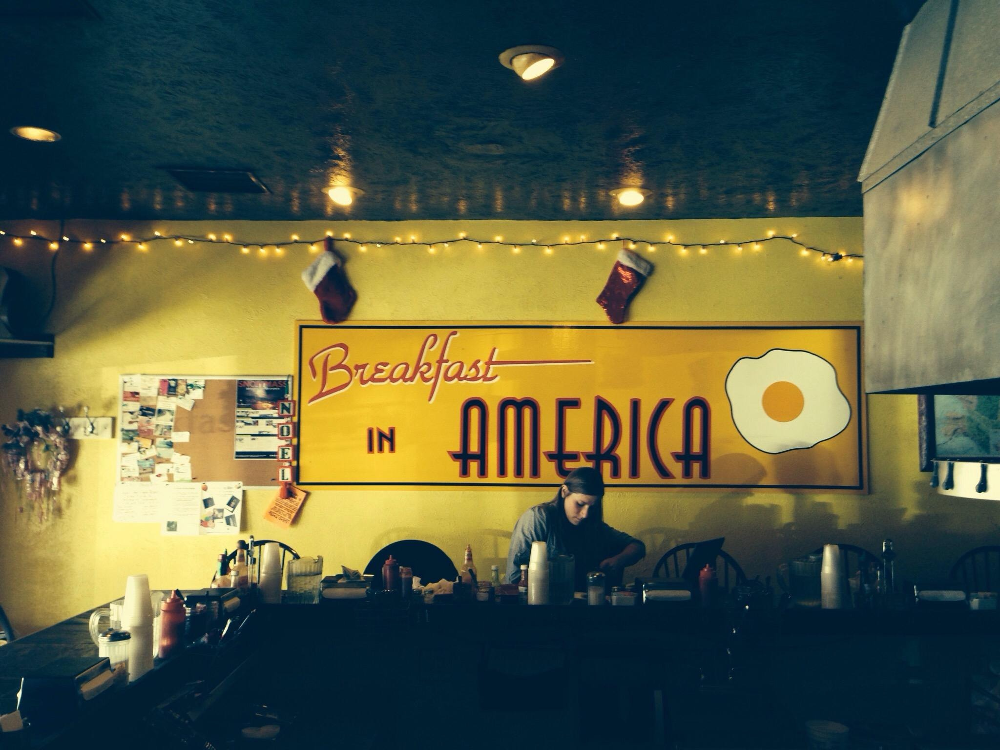
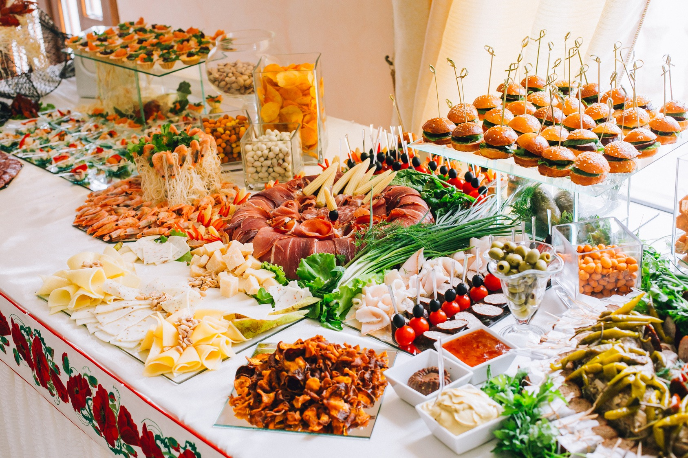

| S.no | Image | Items | Price |
|---|---|---|---|
| 1 | Idly | 40 | |
| 2 |  |
Biriyani | 150 |
| 3 | vada | 100 | |
| 4 |  |
Rice | 50 |
Food Bytes is a food outlet that offers a wide variety of dishes including fast food, snacks, and beverages. It uses fresh ingredients and follows proper cleanliness standards. Food Bytes has become popular among students and working professionals because of its quick service and tasty food.Food Bytes is a food outlet that offers a wide variety of dishes including fast food, snacks, and beverages. It uses fresh ingredients and follows proper cleanliness standards. Food Bytes has become popular among students and working professionals because of its quick service and tasty food. Food Bytes is a food outlet that offers a wide variety of dishes including fast food, snacks, and beverages. It uses fresh ingredients and follows proper cleanliness standards. Food Bytes has become popular among students and working professionals because of its quick service and tasty food. Food Bytes is a food outlet that offers a wide variety of dishes including fast food, snacks, and beverages. It uses fresh ingredients and follows proper cleanliness standards. Food Bytes has become popular among students and working professionals because of its quick.

Food Bytes is a food outlet that offers a wide variety of dishes including fast food, snacks, and beverages. It uses fresh ingredients and follows proper cleanliness standards. Food Bytes has become popular among students and working professionals because of its quick service and tasty food.Food Bytes is a food outlet that offers a wide variety of dishes including fast food, snacks, and beverages. It uses fresh ingredients and follows proper cleanliness standards. Food Bytes has become popular among students and working professionals because of its quick service and tasty food. Food Bytes is a food out

Food Bytes is a food outlet that offers a wide variety of dishes including fast food, snacks, and beverages. It uses fresh ingredients and follows proper cleanliness standards. Food Bytes has become popular among students and working professionals because of its quick service and tasty food.Food Bytes is a food outlet that offers a wide variety of dishes including fast food, snacks, and beverages. It uses fresh ingredients and follows proper cleanliness standards. Food Bytes has become popular among students and working professionals because of its quick service and tasty food. Food Bytes is a food out
| S.no | Image | Items | Price |
|---|---|---|---|
| 1 | Idly | 40 | |
| 2 | |
Biriyani | 150 |
| 3 | vada | 100 | |
| 4 | |
Rice | 50 |